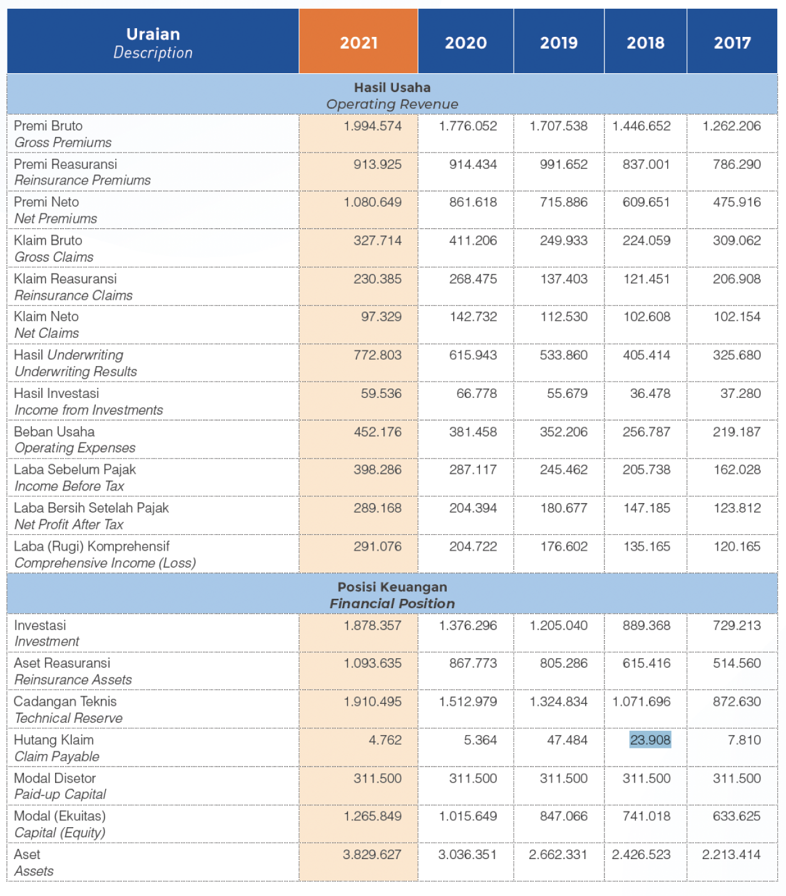

Leading in Micro Insurance with Product Diversity and Digitalized Business Process
01
Ikhtisar
Keuangan
Financial Highlights
Profil Dewan Komisaris
Board of Commissioners’ Profile
PT BRI Asuransi Indonesia atau lebih dikenal dengan nama BRI Insurance atau BRINS selanjutnya disebut Perseroan adalah sebuah perusahaan asuransi umum nasional yang didirikan pada tanggal 17 April 1989 berdasarkan akta notaris Muhaini Salim, S.H. di Jakarta dengan No. 121 dan disahkan dengan penetapan Menteri Kehakiman RI pada tanggal 3 Mei 1989 No. C2.4160. HT.01.01 Tahun 1989. Perseroan memperoleh izin lisensi Dagang dari Menteri Keuangan RI dengan pengesahan No. KEP.128/KM.13/1989 tanggal 26 Agustus 1989.
Tujuan awal didirikannya BRI Insurance adalah untuk memberikan perlindungan asuransi terhadap aset PT Bank Rakyat Indonesia (Persero), Tbk. termasuk agunan para nasabahnya. Seiring dengan perkembangannya, BRI Insurance terus memperluas pangsa pasar dan jaringan kerja yang tidak hanya berfokus kepada bank BRI dan nasabahnya, tetapi juga melayani masyarakat luas, baik itu perorangan maupun perusahaan, termasuk BUMN, BUMD, dan perusahaan swasta. Untuk melengkapi pelayanan Perseroan kepada masyarakat, pada tahun 2003, Unit Usaha Syariah didirikan untuk melayani pangsa pasar Syariah dan berencana melakukan spin off pada tahun 2024 sesuai dengan yang tercantum dalam Rencana Kerja Pemisahan Unit Syariah (RKPUS).
Sejak tanggal 31 Januari 2020, PT Asuransi Bringin Sejahtera Artamakmur berganti nama menjadi PT BRI Asuransi Indonesia, perubahan nama perusahaan diiringi dengan rebranding logo dari BRINS menjadi BRI Insurance. Rebranding resmi diluncurkan pada saat BRI Insurance merayakan ulang tahun nya yang ke-31 (tiga puluh satu) pada tanggal 17 April 2020. Transformasi yang dilakukan merupakan salah satu wujud dari peralihan saham milik Dana Pensiun BRI kepada PT Bank Rakyat Indonesia (Persero), Tbk.
Sekilas Perseroan
Company at A Glance
PT BRI Asuransi Indonesia atau lebih dikenal dengan nama BRI Insurance atau BRINS selanjutnya disebut Perseroan adalah sebuah perusahaan asuransi umum nasional yang didirikan pada tanggal 17 April 1989 berdasarkan akta notaris Muhaini Salim, S.H. di Jakarta dengan No. 121 dan disahkan dengan penetapan Menteri Kehakiman RI pada tanggal 3 Mei 1989 No. C2.4160. HT.01.01 Tahun 1989. Perseroan memperoleh izin lisensi Dagang dari Menteri Keuangan RI dengan pengesahan No. KEP.128/KM.13/1989 tanggal 26 Agustus 1989.
Tujuan awal didirikannya BRI Insurance adalah untuk memberikan perlindungan asuransi terhadap aset PT Bank Rakyat Indonesia (Persero), Tbk. termasuk agunan para nasabahnya. Seiring dengan perkembangannya, BRI Insurance terus memperluas pangsa pasar dan jaringan kerja yang tidak hanya berfokus kepada bank BRI dan nasabahnya, tetapi juga melayani masyarakat luas, baik itu perorangan maupun perusahaan, termasuk BUMN, BUMD, dan perusahaan swasta. Untuk melengkapi pelayanan Perseroan kepada masyarakat, pada tahun 2003, Unit Usaha Syariah didirikan untuk melayani pangsa pasar Syariah dan berencana melakukan spin off pada tahun 2024 sesuai dengan yang tercantum dalam Rencana Kerja Pemisahan Unit Syariah (RKPUS).
Sejak tanggal 31 Januari 2020, PT Asuransi Bringin Sejahtera Artamakmur berganti nama menjadi PT BRI Asuransi Indonesia, perubahan nama perusahaan diiringi dengan rebranding logo dari BRINS menjadi BRI Insurance. Rebranding resmi diluncurkan pada saat BRI Insurance merayakan ulang tahun nya yang ke-31 (tiga puluh satu) pada tanggal 17 April 2020. Transformasi yang dilakukan merupakan salah satu wujud dari peralihan saham milik Dana Pensiun BRI kepada PT Bank Rakyat Indonesia (Persero), Tbk.
Sumber risiko operasional adalah struktur organisasi, SDM, volume dan beban kerja yang dimiliki, tingkat kompleksitas Perseroan yang tinggi, sistem dan teknologi informasi tidak memadai, terdapat kecurangan dan permasalahan hukum, serta adanya gangguan bisnis Perseroan.
Risiko operasional dapat meningkat antara lain karena adanya serangan hacker terhadap sistem teknologi Perseroan dan pengunduran diri pegawai kunci (Key Person) secara mendadak sehingga mengakibatkan tidak berjalannya organisasi.
Sejalan dengan pertumbuhan dan perkembangan bisnis perusahaan, BRI Insurance mengelola Risiko Enterprise yang terintegrasi, terukur, dinamis, dan objektif, guna memberikan nilai tambah dan menjaga keberlanjutan perusahaan. Penerapan proses manajemen risiko dijalankan pada setiap proses bisnis perusahaan dengan mengidentifikasi, mengukur, memantau dan mengendalikan eksposur risiko. Penerapan proses manajemen risiko dilakukan melalui sinergi dan kolaborasi antara three line of defense dalam rangka menjalankan bisnis dan menjaga eksposur risiko perusahaan pada batas risk tolerance dan tidak melampaui risk appetite perusahaan.
BRI Insurance terus melakukan upaya perbaikan dalam rangka menerapkan enterprise risk management yang efektif dalam rangka mewujudkan tujuan perusahaan yaitu pertumbuhan bisnis dan pencapaian kinerja perusahaan yang baik, sehat, berkualitas, dan sustain. Pelaksanaan self assessment dan pemantauan profil risiko perusahaan dilakukan secara triwulanan sebagai bentuk penerapan proses manajemen risiko yang baik dan early warning signal. Berdasarkan hasil penilaian profil risiko perusahaan pada triwulan IV tahun 2021, perusahaan memiliki skor profil risiko low to moderate dengan tingkat Kesehatan perusahaan
Kepala Divisi
Head of Division


Ikhtisar Keuangan
Dalam Jutaan Rupiah, kecuali dinyatakan lain
In Millions of Rupiah, unless otherwise stated

Rasio-Rasio Keuangan
Dalam Jutaan Rupiah, kecuali dinyatakan lain
In Millions of Rupiah, unless otherwise stated
Jaringan Kerja
Operational Offices

Laporan Management
Profil Perusahaan